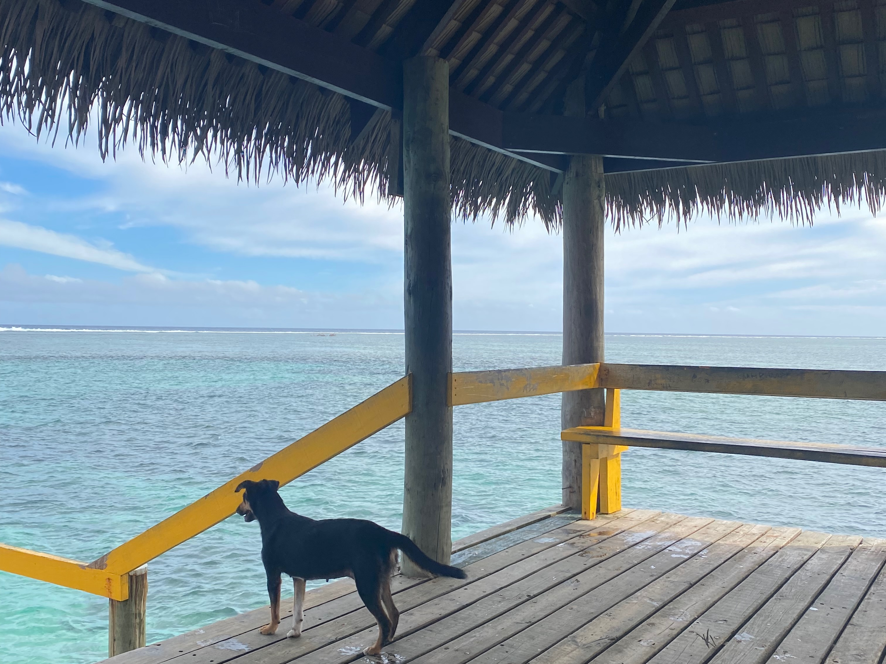

Samantha's Travels
Fiji

Overview
Fiji is a country in the South Pacific and is made up of more than 300 Islands. It is best known for its rugged tropical landscapes, coral reefs and beaches lined with palm trees. The main Island Viti Levu is home to the capital Suva which is a port city. There are three official languages; Fijian, English and Fijian Hindi as Fiji is home to a large Fijian Indian population. I have been lucky enough to visit Fiji multiple times growing up with my last trip being in 2023. A few of my favourite things to do here are swim in the ocean/snorkel, visit the Maui Jetty, shop at the Sigatoka Markets and Ecotrax (an e-bike tour along abandoned sugar cane railways).

Personal Thoughts
Fiji is a very special place for me as I have been there probably 6 times with my family and friends. I have created lots of memories here and lots of local friends too. My favourite spot would have to be the Maui Bay Jetty. This is right near a friends village that we have been to visit and we always go down to the jetty and jump off to swim and snorkel as there are heaps of cool fish to spot, the only downside is you sometimes spy sea snakes which I am terrified of! I also love to go on beach walks and go hunting for pretty shells as the beaches are full of them, you just have to watch out for all the hermit crabs that could be calling them home. If I were to recommend one must do activity while your in Fiji it would have to be Ecotrax. Ecotrax is located along Fiji’s coral coast and uses electric assisted railway bikes to ride along abandoned sugarcane tramlines. Along the tour you stop at a village and get to meet all the excited kids and near the end stop off and swim at a beach with crystal clear waters which is beautiful. The only downside to Fiji I would say is that it can sometimes be a bit unclean as it is very tourist dominated and often the environment is not treated how it should. It is also hard to find nice snorkeling spots as due to climate change and sun bleaching all the coral near the shore is all dead meaning there are less fish to spot unless you go far out.